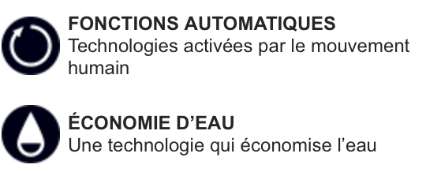

Tous nos produits

Robinet automatique
Grâce au système automatique avec commande à capteurs, il n'est plus nécessaire de toucher les robinets. Ainsi, les toilettes publiques, notamment, restent propres, et le risque de transmission des bactéries est minimisé.
Le capteur de notre robinet automatique est dissimulé de manière presque invisible au niveau du bec. Il peut ainsi enregistrer chaque mouvement de la main avec exactitude, tout en étant protégé contre les actes de vandalisme.
Les jets d'eau des robinets SOFT FLOW, équilibrés avec précision, touchent la peau en douceur, ne causant presque aucune éclaboussure lorsque vous vous lavez les mains. La sensation est douce, brillante et enrichissante. Le fonctionnement par capteur élimine le besoin de toucher ou de levier.
Plus que propre, beau Les eaux translucides de SOFT FLOW sont d'une beauté exquise pour les yeux. Lavage des mains sans éclaboussures Même si l'eau enveloppe complètement les paumes, il n'y a que peu ou pas d'éclaboussures de gouttelettes. Fonctionnement mains libres SOFT FLOW dispose de capteurs pour l'ouverture et la fermeture du bec et pour la commutation entre eau chaude et eau froide. Il suffit de passer la main sur le capteur pour l’opérer.